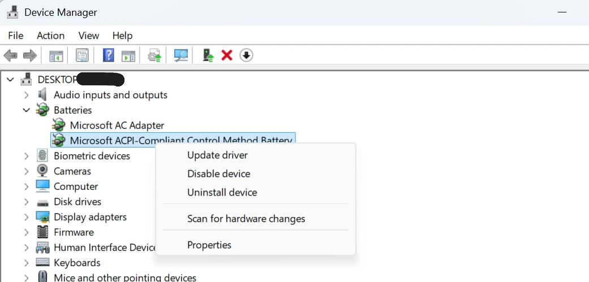

Quick answer
“Plugged in, not charging” often means one of three things: the laptop is holding charge on purpose, the charger is not delivering enough power, or something in Windows or the battery path is interrupting normal charging.
Charging status guide
If your laptop shows "plugged in, not charging," it usually means the charger is detected but the battery is not actively charging. Sometimes that is normal because of battery protection settings. Other times it points to heat, driver glitches, charger mismatch, or battery wear.
This page focuses on that exact status message so you can figure out whether the laptop is protecting the battery, misreading the power state, or warning you about a real charging problem.
Quick answer
“Plugged in, not charging” often means one of three things: the laptop is holding charge on purpose, the charger is not delivering enough power, or something in Windows or the battery path is interrupting normal charging.
Common causes
If the issue is broader than this exact message, the main Laptop Battery Not Charging guide covers the wider charging problem tree.
Power adapter
Heat
Some laptops stop charging when the battery or system temperature climbs too high. This is especially common during gaming, long video calls, exports, or when the laptop is charging on a bed or couch.
If the issue happens more often when the fan is loud or the palm rest feels hot, check the Laptop Overheating Fix guide before assuming the battery is dead.
Battery wear
A worn battery may accept charge slowly, stop early, or report the wrong status. That is why it helps to compare Design Capacity and Full Charge Capacity using the How to Check Laptop Battery Health guide.
Once you have those values, you can use the Battery Health Check Laptop tool to get a clearer picture of whether replacement is likely.
Drivers


Windows settings
Check whether battery care, conservation mode, or a charge threshold is enabled in your laptop maker’s software. A laptop that stops at 60% or 80% may be behaving exactly as designed.
If you mainly want to reduce long-term wear after this issue is fixed, the Improve Laptop Battery Life guide covers the settings and habits that matter most.

Replace or repair
Avoid mistakes
This usually means the laptop can see the charger but is not actively filling the battery. Common causes include battery protection limits, a weak charger, charging heat, Windows driver issues, or battery wear.
No. Some laptops pause charging on purpose at 60% or 80% to protect the battery. A charger mismatch, heat, or driver problem can also cause the message.
Yes. Some laptops reduce or pause charging when the battery or internal components get too hot. That is why cooling checks matter if charging problems happen during heavy use.
Reinstalling the Microsoft AC Adapter and Microsoft ACPI battery entries in Device Manager is a common troubleshooting step when Windows is showing the wrong charging status.
Replacement becomes more likely when the battery report shows poor health, charging remains unreliable with a known-good charger, or the battery also drains very fast, shuts down early, or looks swollen.
Start with the charger, cable, charging limit settings, and laptop temperature. Then move to battery report checks and Device Manager if the simple steps do not help.